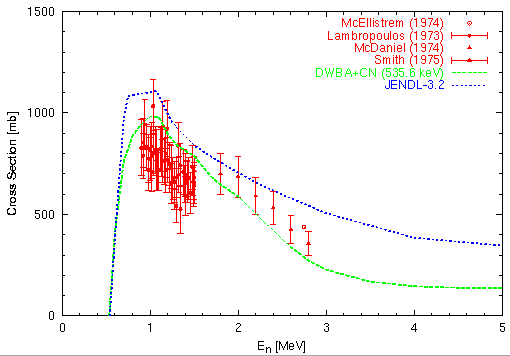

set term postscript eps enhanced color
set size 0.8,0.8
set origin 0.1,0.1
set xlabel "E_n [MeV]"
set xrange [ 0 : 5 ]
set xtics 0,1
set mxtics 5
set ylabel "Cross Section [mb]"
set yrange [ 1 : 1500 ]
set ytics 0,500
set mytics 5
set linestyle 1 lt 2 lw 3
set linestyle 2 lt 3 lw 3
set linestyle 3 lt 4 lw 3
set linestyle 4 lt 1 pt 6 ps 0.7
set linestyle 5 lt 1 pt 7 ps 0.7
set linestyle 6 lt 1 pt 8 ps 0.7
set linestyle 7 lt 1 pt 9 ps 0.7
set output "mo100.eps"
plot "mo100.exp" index 0:0 using 2:3 title "McEllistrem (1974)" with points linestyle 4,\
"mo100.exp" index 4:4 using 3:5:6 title "Lambropoulos (1973)" with yerrorbars linestyle 5,\
"mo100.exp" index 7:7 using 2:4 title "McDaniel (1974)" with points linestyle 6,\
"mo100.exp" index 8:8 using 2:3:4 title "Smith (1975)" with yerrorbars linestyle 7,\
"mo100.cal" using 1:2 title "DWBA+CN (535.6 keV)" with lines linestyle 1,\
"mo100.evl" using 1:2 title "JENDL-3.2" with lines linestyle 2
pause -1
